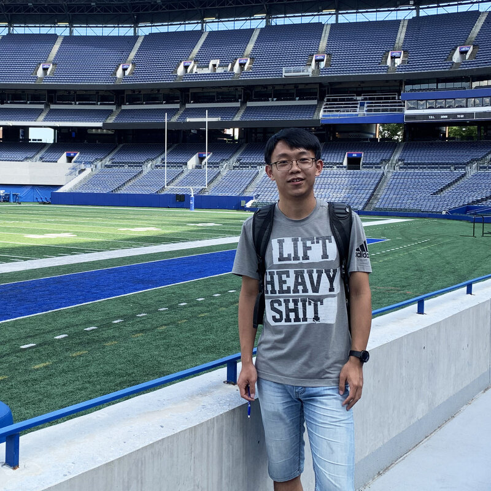
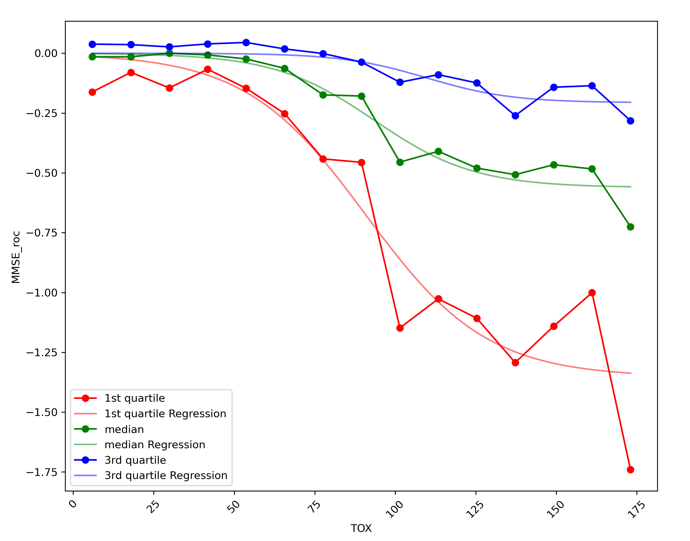
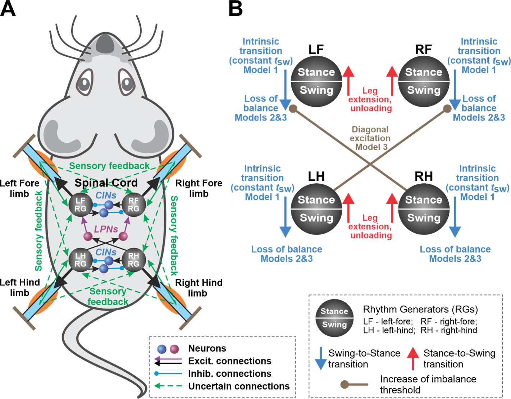
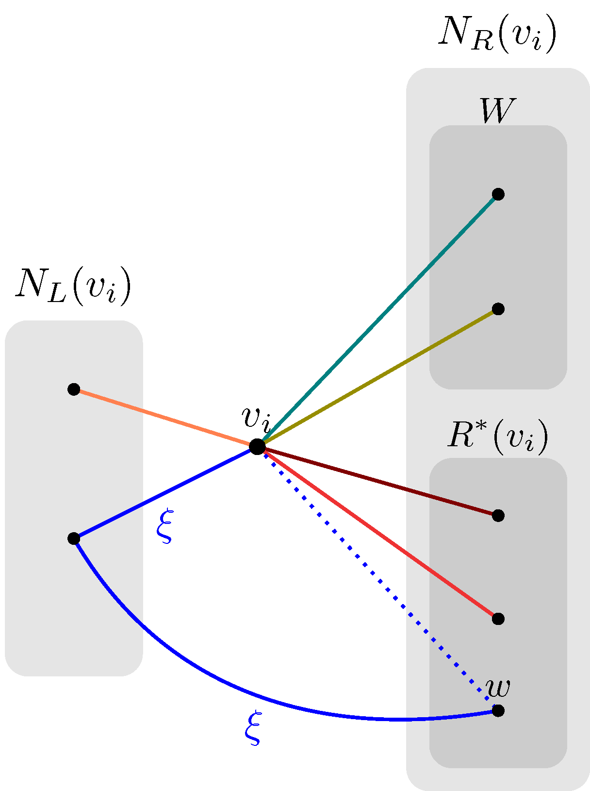

Hello, I'm
Guoning Yu
于国宁
Computational neuroscientist
Postdoctoral researcher · Insanally Lab
School of Medicine
University of Pittsburgh
Get to know more
About Me


Experience
5+ years of research
Data Science / Machine Learning
in application to
Neuroscience and Mathematics

Education
Ph. D. Mathematics
Georgia State University
B. Sc. Mathematics
Lanzhou University
I'm a postdoctoral researcher and computational neuroscientist working in Insanally Lab at University of Pittsburgh. I use mathematical modeling and machine learning to study how neural circuits support auditory perception and flexible behavior, building on a background in mathematics and graph theory. I received my Ph. D. in Mathematics at Georgia State University with Drs. Guantao Chen and Yaroslav Molkov as my supervisors. My current interests are in machine learning, computational neuroscience, and graph theory.
Explore my work
Selected Research

Alzheimer's Disease
Clinical Data Modeling
Understanding Alzheimer’s disease means finding meaningful patterns in complex patient records.
What can changes in memory and biomarkers tell us about Alzheimer’s disease?
This exploratory project uses machine learning to examine how biomarkers and memory-test scores relate to diagnosis, including how they change over time. Comparing these signals helps identify which measurements carry useful information for further research.
Clinical data · Machine learning

Mouse Locomotion Control
Every step requires the nervous system to coordinate the limbs and respond to signals from the body.
How does the nervous system keep a walking animal coordinated and balanced?
This neuro-biomechanical model of mouse locomotion explores how neural circuits, body mechanics, and sensory feedback work together. The simulations suggest how these interactions shape walking patterns and maintain direction, providing testable explanations for a fundamental ability that depends on many interacting parts.
Computational neuroscience · Modeling

Linear Arboricity
of Degenerate Graphs
Breaking a network into simpler pieces helps reveal how it is organized.
How few sets of paths are needed to decompose a network?
This work studies how a network’s connections can be partitioned into sets of disjoint paths. It proves limits on the number of sets needed for certain types of networks, advancing a longstanding mathematical conjecture that links a network’s overall structure to the number of connections around individual points.
Graph theory · Decomposition
List of my
Publications
- Sensory feedback and central neuronal interactions in mouse locomotion
- The degree-\(f\) fractional density algorithm in graph edge coloring
- A decomposition method on solving the linear arboricity conjecture
- Linear arboricity of degenerate graphs
Yaroslav I. Molkov, Guoning Yu, Jessica Ausborn, Julien Bouvier, Simon M. Danner, Ilya A. Rybak
R. Soc. Open Sci. 2024; 11(8):240207.
Guantao Chen, Guoning Yu*
Preprint, Submitted July 2023.
Guantao Chen, Yanli Hao, Guoning Yu*
J. Graph Theory. 2023; 105: 315-332.
Guantao Chen, Yanli Hao, Guoning Yu*
J. Graph Theory. 2023; 104: 360-371.
*Authors in pure maths papers are listed in alphabetical order by convention. See the Culture Statement from American Mathematical Society.
Some of my academic
Presentations
2025 Nov.
Neuroscience 2025 Poster Session
• Contributions and synaptic basis of diverse cortical neuron responses to flexible task performance
2023 Mar.
AMS 2023 Spring Southeastern Sectional Meeting
• A decomposition method on solving the linear arboricity conjecture
2023 Feb.
Graph Theory Seminar @ Georgia Institute of Technology
• A polynomial time algorithm for the fractional \(f\)-density
2022 Nov.
Neuroscience 2022 Poster Session
• On the role of sensory feedback and central neuronal interactions in locomotor gait and balance control in quadrupeds
2022 Oct.
34th Midwestern Conference on Combinatorics and Combinatorial Computing
• A decomposition method on solving the linear arboricity conjecture
2021 Aug.
Atlanta Lecture Series in Combinatorics and Graph Theory
• Linear arboricity of degenerate graphs
Get in touch